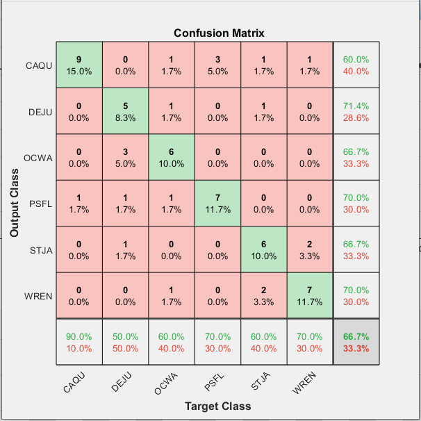

CS 470 : Monitoring Bird Biodiversity
Introduction
In this project we were given the opportunity to work closely in the Soundscapes to Landscapes project (S2L). We were provided with the audio recordings that were placed around Sonoma County. These one minute recordings contained a lot of different noise but clearly mainly different bird noises. We were also provided with a .csv file containing information about some of the recordings. With what was given to us our task/goal was to help provide information by helping to detect and classify bird noises in those audio recordings through Deep Learning methods and bird specific programs
Approach/Algorithm
Our overall approach was to train and test these audio files efficiently. To maximize our productivity we were provided a flowchart that allowed us to pick many different paths for all of us to work on. The intial two options was to either strictly work with the labeled ROI's using the .csv or finding featurues with audio files itself. The end goal was to evaluate unknown audio files that could potentialy have bird noises in it. To evaulate meaning to detect and classify the bird sounds using different training models. The first step was to find audio features/detect different sounds without the .csv information using Raven and WarbleR (Starting with "Audio .wav" cloud in the flowchart)
Using Raven and WarbleR
For the initial detection of sounds within the truncated CSV, the thought was to do this in Raven Pro 1.6. This initial detection would be done with a BLOB (Binary Large Object) detector called BLED (Band Limited Energy Detector) within Raven. BLED takes in a spectrogram of the audio file and attempts to find sounds of interest within a recording. This with the use of R Statistical Language would be used in an attempt to automate the process so that a large data set could be run from a simple command. The first problem with that is that the library constructed within R to do this called Rraven was old and had not been updated in quite some time. Every time a command was ran the command either didn’t work or a fix had to be made to the files or directory of Raven. Opening files from the command line took a week to figure out all the little changes that had to be implemented to Raven’s directory and within Raven software itself. A simple yet exhausting change was changing the actual program name from “Raven Pro 1.6” to just “Raven” so that Rraven could open Raven. Once opening a file was figured out the next challenge was to get Rraven to open an audio file and use BLED within Raven to detect specific sounds. With the library, Rraven not having been updated and wasting over a week on fixes through Raven software engineers, BLED through Raven Pro was abandoned. Having a back up was essential in this case. Within R Statistical Language there was a native library called WarbleR. This library is available on Python as well but was not used using it through R. This does a remarkably similar thing to what BLED does within Raven. You set a frequency range and estimated time of the event and it can attempt a BLOB detection on a file, or in this case many files. As this detected just worked there were some nuances to it. First R statistical language can only have a file folder input of 4 gigabytes or less. In the truncated folder of audio files, the size was in upwards of 30 gigabytes so the detection had to be done in batches of 4 gigabytes. The next nuances were to set the detector to the desired frequency and estimated time. A quick Google search turns up that bird calls are between 1 and 8 kHz so the detector was set for 0 to 9 kHz. Next was to find the time and that was done by taking the CSV file and calculating the duration of a bird call. This was done by a committee or expert and was labeled within the CSV. The duration for the truncated CSV file was between 0.3 and 3 seconds. WarbleR detector was run for 3 days producing multiple CSV files of sounds between 0.3 to 3 seconds and between 0 to 9 kHz. All these files were run in a Python script to combine all the files into one large CSV file to be used later.
Example of using WarbleR
All this BLOB detector does is detect sounds from 0 to 9 kHz and within a .3 to 3-second duration. There are two spectrograms and one wav file from one of those spectrograms.
Preproccesing for Training Models
Before we started training we needed to preprocess our current data by padding it with gaussian noise. We did this by grabbing a 3 second window containing the ROI and applying gaussian on it. After that we split into making training models for 1D Audio Features and 2D Spectograms.

Extracting 1D Audio Features
We used MATLAB's audioFeatureExtractor to extract certain audio features. When deciding on what features to extract we decided on Mel-frequency cepstral coefficients (MFCC). In our research we found that these features were commonly used in a lot speech and sound recognition applications so in order to save space we strictly used MFCC.
Creating 2D Spectograms
We used MATLAB's spectogram function to turn our signal into a spectogram. Using this we could clearly see by the distinct spikes in frequencies where possible regions of interest (ROI's) could be in the one minute recording.
Applying PCA and SVM
When applying both of these techniques we would have a matrix of either 1D Audio Features or 2D Spectograms in each column. PCA was applied similar to our Assignment 2 by using eigencoeffcients and eigenvectors to find the closest match verify if it's the same type of bird. SVM was by creating a classfier for each type of bird and using the One vs Rest method.
Approach to 2D Data
Spectrograms
A spectrogram is a visual depiction of the strength of a signal over time. What spectrograns allow us to do in the case of the project, is convert the audio file of a bird into 2D data to analyse.
The method we used to form the spectrograms:
The method we used to form the spectrograms:
Having the audio signals of the bird chirps as images opened the doorway for image object detection methods. Below are the results from forming recognition modules with CNN Transfer Learning, CNN SVM Feature Extraction:
CNN
In order for the spectrogram images to be put into the CNN they had to be padded, so we could keep the information of image borders intact as well as letting the images survive through deeper networks.
Method we used to pad the spectrograms:
An example of a padded ROI Spectrogram:
The results we got from the CNN testing gave the highest percentage recognition rates out of all the methods in the entire project. A lot of the reason was due to the established networks we could use and manipulate. In the two different CNN methods, we tested out a myriad of options and layers as well as 4 different networks – googlenet, resnet18, alexnet and a custom net of our own making. Due to the promising results of the first 3, we didn’t try out squeezenet, inceptionv3 or the other resnets, though they could be worth trying.
Below the results for each of the methods are given:
Transfer Learning
This method surmises to taking the knowledge gained from analyzing a dataset and transferring it to a smaller set. In a CNN the earlier layers extract general features from the images, letting the deeper layers recognize the more particular features.
For the results below we split the training and test in a 30:10 split. This was mostly for time’s sake as it enabled us to experiment with the nets’ options and layers manifold, the average time usually being between 3-15 mins. When we did test with a larger volume of data (at least 150+ training data) it did increase the recognition rate, giving a 95+ percent on the varied versions of the preestablished networks, peaking at 98 percent. The times were upwards of 40 mins, peaking at 3 hours. For each of the networks we adjusted the fully connected layer and classification layer.
The options we used for each network were, for the most part:
Options Reasoning:
The Mini-Batch Size was picked due to the relatively small size we would be usually be testing on and we went for quantity with the tests
The Max Epochs value was the default, however going smaller signifcantly lowered the accuracy of the method, while higher increased it. Due to there being more data for the CNN to be trained on.
The LearnRateSchedule was chosen to be piecewise as it speeeds up the tests and it allows for the options LearnRateDropPeriod and LearnRateDropFactor. These values enable InitialLearnRate to be dynamic and is altered depending how the analysis goes. It increased the accuracy for every net, except for when performing TransferLearning with resnet18 surprisingly. When the LearnRateSchedule was set to the default value, ResNet18 was able to reach the 90's
Shuffle shuffles the data each epoch
Momentum was given 0.9 as we wanted the last step to contribute pretty significantly for the next step in the Stochastic Gradient Descent process
Verbose set to false as we were getting the data we wanted from the training plot, confusion matrix and f_score
Verbose frequency was set to 10 when we were grabbing verbose data, as well as for the command print that trainnetwork does everytime the data is validated
ValidationFrequency given 20 so it could be validated about 2 times each epoch
Validation Patience given 3 for quick drops if the gradient was stagnating, however to get greater accuracy we would up it every now and then. Default is infinite and if we wanted to give the module that gave the best results we would leave it on default
SVM
In this method we extracted feature representations of the images from different layers in the CNN we were testing. Then the features extracted are used as predictor variables and put into a Support Vector Machine.
In general, the results did not quite reach the peaks of Transfer Learning, though they were still quite high. Most of the peaks were in mid to high 80’s. Surprisingly, Resnet recognition rates were better on the more general layers, while the other nets had their rates halved on those layers. They performed best on the deeper layers, specifically the fully connected layers.
The absolute basis modification we did to each net looked like this:
Results
The best results from these alone was using a 70% : 30% split of the audio files in the truncated .csv. We got an 80% accuracy using PCA and 72% accuracy using SVM on 1D Audio Features. We couldn't use the same type of data for the othes because it would be too large or took too long for matlab to run. In these last four confusion matrices the training set used 1800 files (300 from each birdcode) and tested on 1500+ unused files.

CNN Transfer Learning Results:
Resnet18
Accuracy with same options: 83 percent
Accuracy without learning rate set: 93 Percent
AlexNet
Accuracy: 90 %
Accuracy without validation patience: 95%
GoogleNet
Accuracy: 91.7 %
CustomNet
We made a mini neural network, mainly for the input layer as we wanted to see if the results would change if we kept the same aspect ratio of the images. To fit in the other networks we had to squish the width of ROIs so this let us see what would happen if we did not have to do it.
The layers we used:
It didn’t reach the levels of success the other networks did, however it was still around the same percentage as the other methods we tried. We also found the more layers added, the higher it would get, in a pretty rapid manner. We started off with 6 layers, the and then added a couple at a time till we reached the 13 layer graph we ended up with. We went from 22% to 78% so maybe with some more time and a much a greater understanding of all the layers and options MATLAB offered, it could have lead to something pretty fruitful.
Something that was limiting the results of the customNet was that it would consistently confuse a Dark-Eyed Junco (DEJU) and a Orange Crowned Warbler (OCWA) with each other. This was actually a trend that was common in all the methods, albeit to a lesser extent in the other nets.
CNN SVM Results:
Resnet18
Accuracy: 82 %
Best Layer: res2a (Early reLu Layer)
AlexNet
Accuracy: 85%
Best Layer: FC6, First Fully Connected Layer
GoogleNet
Accuracy: 88%
Best Layer: full-500 (FullyConnected Layer)

CustomNet
With the customNet that we’ve established above, the best results we got were from extracting a feature representation from the Fully Connected Layer. Admittedly it was still fairly low, with the peak being 67%. However extracting a more general representation from a higher layer was significantly lower, usually being in the low 30s
Accuracy: 67%
Best Layer: Fully Connected Layer

Conclusions
When it came to extracting features using warblR we didn't know it was going to be a process
From our results we saw that using strictly PCA and SVM methods was not enough in terms of accuracy and effciency. Although we can see that with a lot of training that classifying can become more accurate but that would mean using up a lot more space and memory. Specifically we saw that when it came down to similar bird calls based off either the duration or frequency it was a lot harder to distinguish between the two. It also seemed like we had much more data for Pacific-slope Flycatcher (PSFL) which made it a lot easier to classify that one. For those two data models alone we can clearly see that it wasn't as good as using CNN methods.
In terms of the CNN method, it gave a lot of positive results, as they were the highest out of all the methods we tried in the entire project. With a lot of time to train and load the data and some fine tuning to the network itself, we believe Transfer Learning could be modified to get a near 99 match, at least when deciphering between the 6 classes we were given. The main hiccup that was pretty consistent was the confusion between the Orange Colored Warbler (OCWA) and the Dark Eyed Junco(DEJU). Observing with the human eye the ROIs do look quite similar, but you can make out a
References
https://medium.com/@mikesmales/sound-classification-using-deep-learning-8bc2aa1990b7
https://www.mathworks.com/help/signal/ref/spectrogram.html
https://www.mathworks.com/help/audio/ref/audiofeatureextractor.html?s_tid=mwa_osa_a
https://www.mathworks.com/help/deeplearning/ref/trainingoptions.html
https://arxiv.org/pdf/1809.01543.pdf